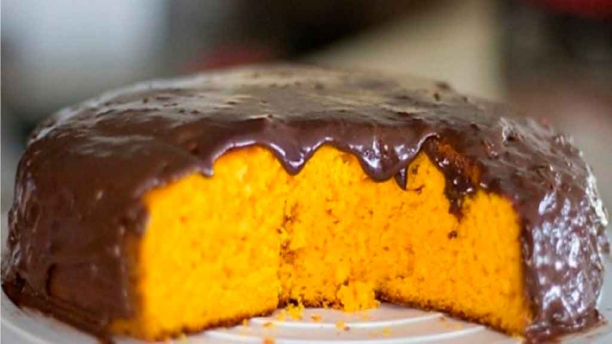

Carrot Cake Recipe

Description
This carrot cake is quick, easy to make, and utterly delicious. It wasn’t
until recently that we realized how much we love carrot cake. It wasn’t
something either of us grew up eating. Thanks to this easy recipe, we fell
in love.
Ingredients
Dough
- Oil
- 1/2 cup of oil
- Carrot
- 3 medium carrots, grated
- Eggs
- 4 eggs
- Sugar
- 2 cups of sugar
- Wheat Flour
- 2 and 1/2 cups of wheat flour
- Baking Powder
- 1 tablespoon of baking powder
Topping
- Butter
- 1 tablespoon of butter
- Cocoa Powder
- 3 tablespoons of cocoa powder
- Sugar
- 1 cup of sugar
- Milk
- 1 cup of milk
Back to homepage.